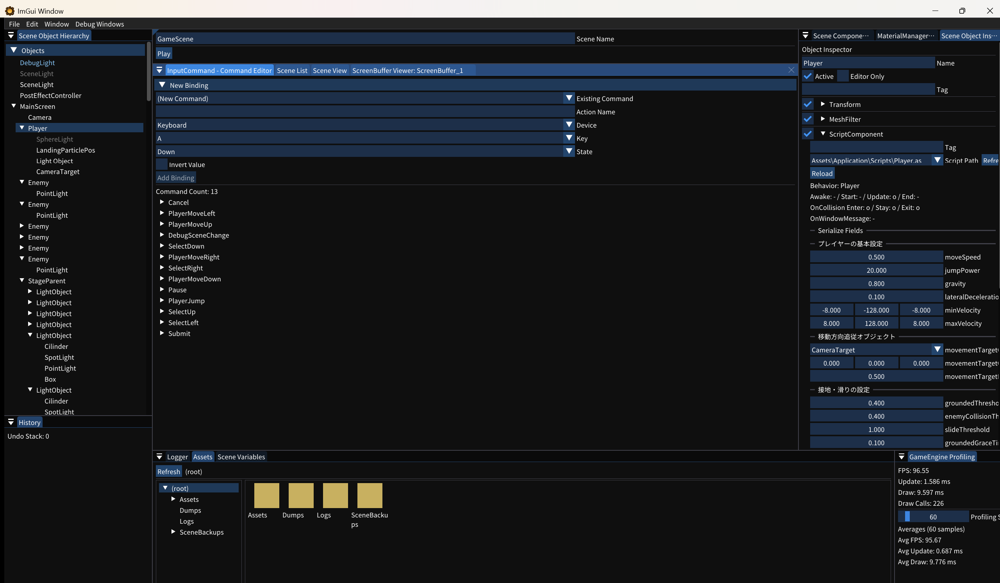

7. 入力を設定する
Input Command Editor を使い、スクリプトのコマンド名とキーボード入力を画面上で結び付けます。

1. Input Command Editor を開く
- メニューバーから Debug Windows → Input Command Editor を選択します。
- New Binding を展開する折りたたまれていれば見出しをクリックします。
2. 左右移動を登録する
次の値を設定して Add Binding を押します。同じコマンドに複数のキーを追加する場合は、Existing Command から既存名を選ぶと入力ミスを防げます。
| Action Name | Device | Key | State | Invert Value |
|---|---|---|---|---|
PlayerMoveLeft | Keyboard | A | Down | オン |
PlayerMoveRight | Keyboard | D | Down | オフ |
Down は押している間、Trigger は押した瞬間、Release は離した瞬間に成立します。継続移動には Down、ジャンプのような単発操作には Trigger が適します。
3. Play して入力を確認する
- Scene Editor の
Playを押します。 - A / D キーで Player が左右に動くことを確認します。
- 編集状態へ戻る
Stopを押します。
登録内容はエンジン終了時に Assets/KashipanEngine/InputCommand.json へ保存され、次回起動時に読み込まれます。API から登録する方法は 入力のリファレンス を参照してください。